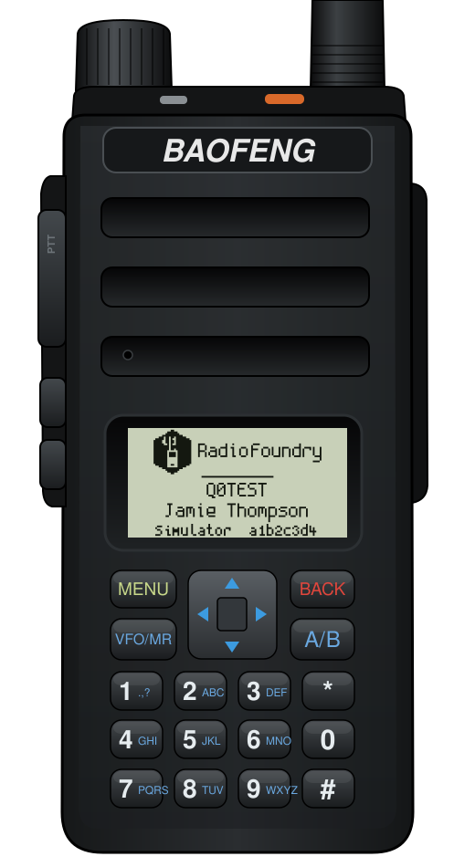
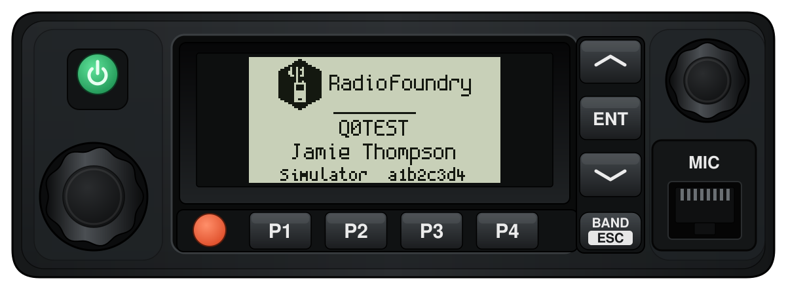

Radios

Baofeng DM-32UV
Compatible
FM·DMR·P25·NXDN · 136-174 / 400-480 MHz · AM de banda aérea 108-137 MHz · FM comercial 87-108 MHz

Baofeng DM-1701
Retevis RT84
Compatible
FM·DMR·P25·NXDN · 136-174 / 400-480 MHz

Baofeng DM-1801 Pro
Baofeng DM-1801
Compatible
FM·DMR·P25·NXDN · 136-174 / 400-470 MHz · AM de banda aérea 108-137 MHz · FM comercial 87-108 MHz

Radioddity DB25-D PRO
Kydera CDR-300UV
Compatible
FM·DMR·P25·NXDN · 136-174 / 400-480 MHz · FM comercial 87-108 MHz

TYT MD-380
TYT MD-390, Retevis RT3
Compatible
FM·DMR · 400-480 MHz or 136-174 MHz (one band per radio)

TYT MD-UV380
TYT MD-UV390, TYT MD-UV390 Plus 10 W
Compatible
FM·DMR·P25·NXDN · 136-174 / 400-480 MHz

Retevis RT3S
Compatible
FM·DMR·P25·NXDN · 136-174 / 400-480 MHz

TYT MD-9600
Retevis RT90
Compatible
FM·DMR·P25·NXDN · 136-174 / 400-480 MHz

Retevis RT10
Compatible
FM·DMR·P25·NXDN · 902-928 MHz
Todas las radios
| Radio | Estado | Procesador | Pantalla | Notas |
|---|---|---|---|---|
| Baofeng DM-32UV | Compatible | HR_C7000 | color, 240 × 320 | FM and DMR voice both ways, CTCSS/DCS, APRS both ways, GPS data, the hotspot and each split duplex half work on air. Open: FM deviation at 12.5 kHz and an outdoor GPS fix. |
| Baofeng DM-1701 Retevis RT84 | Compatible | STM32F405 | 1.77" color, 160 × 128 | FM, DMR voice and data, text messages, alerts, emergency, scan, the hotspot, single frequency repeating, each split duplex half and the USB network services work on air. Open: standalone SFR and a two-radio split duplex pair. |
| Baofeng DM-1801 Pro Baofeng DM-1801 | Compatible | HR_C7000 | monochrome, 128 × 64 | FM with CTCSS/DCS, DMR voice with the radio's own codec, DMR data and text, the hotspot, single frequency repeating, the PPP network services and each split duplex half work on air. Open: VHF transmit and VOX. |
| Radioddity DB25-D PRO Kydera CDR-300UV | Compatible | HR_C7000 | 1.77" color, 160 × 128 | FM and DMR voice both ways, the hotspot, the DMR VFO, the PPP network services, cable programming and settings storage work on the radio. The older FD6818 batches run the same image, untested on a radio. Open: the Retevis RT73. |
| TYT MD-380 TYT MD-390, Retevis RT3 | Compatible | STM32F405 | color, 160 × 128 | FM with CTCSS both ways, DMR voice and SMS in simplex and through a repeater or hotspot on either slot, and codeplug and ID database programming work on a UHF radio. Open: DCS, the tone deviation and the untested VHF image. |
| TYT MD-UV380 TYT MD-UV390, Retevis RT3S, TYT MD-UV390 Plus 10 W | Compatible | STM32F405 | 1.77" color, 160 × 128 | Built on the UV380 family code, with the MD-UV380's keys, display, power tables and GPS. Run on radios by community testers. |
| TYT MD-9600 Retevis RT90 | Compatible | STM32F405 | monochrome, 128 × 64 | One image serves every board revision. On a V1-V3 radio, FM and DMR on both bands, DMR voice and data, text messages, roaming, scan, dual watch, APRS, the hotspot, each split duplex half and the USB network services work on air, with every power level checked on a wattmeter on both bands. V4A/V5 boards are detected; on older boards the radio asks for the revision once. Open: V4 and V4A/V5 boards have not run on a radio, and SFR loses inbound voice frames. |
| Retevis RT10 | Compatible | HR_C7000 | Ninguna | Boots from the boot ROM with the host link, stub entry, the watchdog and the crash log. FM receive with CTCSS/DCS decode, FM transmit, DMR transmit and receive with the radio's own codec, P25 (conventional, and trunked transmit) and NXDN at 4800 bit/s on stored channels, and APRS transmit work on the radio. |
| Anytone AT-D868UV / AT-D878UV / AT-D878UVII Plus, BTECH DMR-6X2, Alinco DJ-MD5, Radioddity GD-AT10G | En curso | — | — | #291 A new platform (GD32F30x) and a new DMR chip (SCT3258, which runs the vocoder itself), so it starts the Anytone family (hardware-anytone.md) |
| Radioddity GD-77, TYT MD-760, GD-77S, Baofeng DM-1801 v1 / DM-860, RD-5R | En curso | — | — | #111 A new platform: a different MCU (NXP MK22FN512), the same HR_C6000 and AT1846S, a 128x64 mono LCD. A DM-1801 bought new today is not v1, and the look-alike DR-1801 is unrelated |
| Radioddity GD-88 | En curso | — | — | #132 Dual receiver on the HR_C7000 platform (chip count not confirmed yet); should reuse much of the DM-32UV port |
| Baofeng DM-36 | En curso | — | — | #607 Built on the DM-32UV's platform: FM, the display, keys and programming run; DMR voice on air and power levels open |
| Anytone AT-D578UV (mobile) | En curso | — | — | #291 The 878's chips in a mobile, with a mid-run MCU change: two platforms (hardware-anytone.md) |
| Radioddity DB40-D, Kydera CDR-700UV (mobile) | Prevista | — | — | Two HR_C7000-class processors (A and B), like the GD-88, so it follows the GD-88 port |
| TYT MD-2017 / Retevis RT82 | Prevista | — | — | The DM-1701's STM32 and HR_C6000 pair with two receivers, so it should reuse the STM32F4 platform. The hardware can receive two channels at once |
| BTECH DMR-6X2 PRO | Prevista | — | — | Built on the AT-D878UVII Plus, so it should follow the Anytone port |
| BridgeCom Maverick | Prevista | — | — | Sold as an upgraded AT-D878UV, so it likely follows the Anytone port |